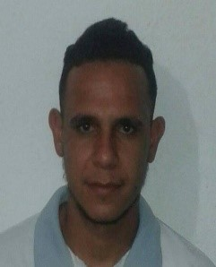

Luis Jose
Ortega
Ortega
Dirección:
Calle Principal Casa Nº 03_03, Sector Santa Rosa de Lima Barbacoas, Edo Aragua.
Fecha de Nacimiento:
14-12-1991
Edad:
27
Correo Electronico:
luisjoseo5222@gmail.com
Estado Civil:
Soltero
Contacto:
0412-0218226 / 02466260281

www.facebook.com/luis.ortega.1422